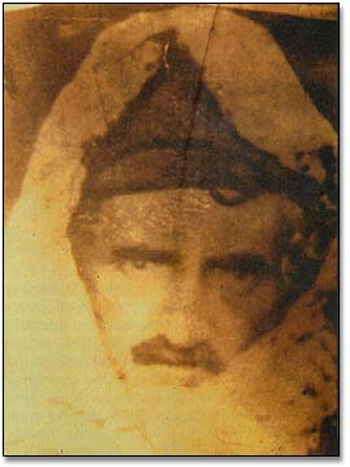
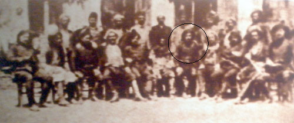
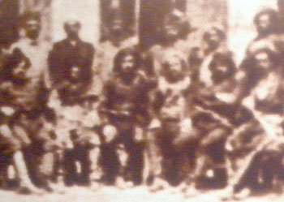
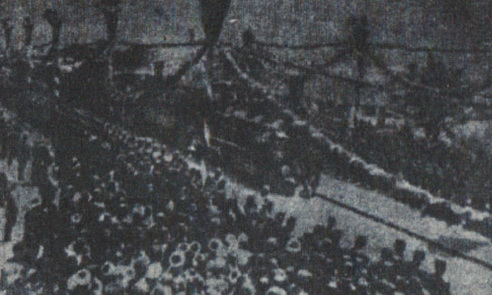
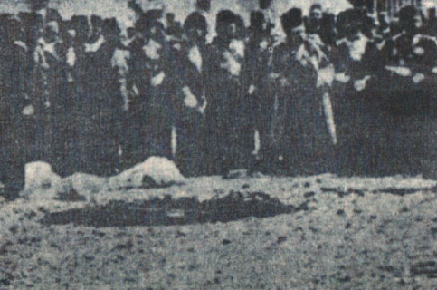
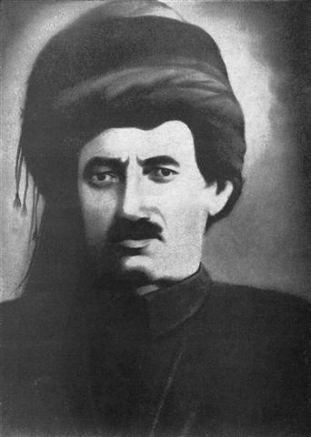
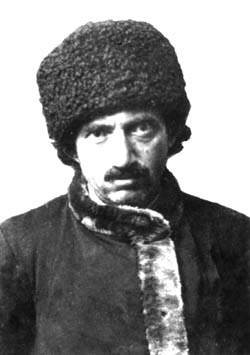
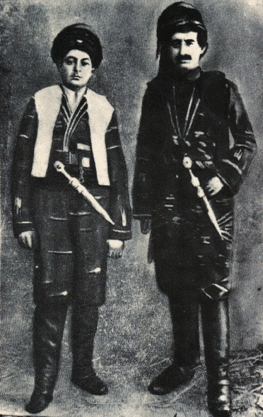

|
Eski Said Dönemi |
  
|
|
Eski Said Dönemi |
|
Eski Said Dönemi

Bilinen ilk fotoðrafý..
Üstad tarafýndan, Miran Aþireti Reisi Mustafa Paþa'nýn oðlu Abdulkerim'e hediye edilmiþtir.

Sultan Reþat ile Rumeli'ye giden içlerinde Bediüzzaman Said Nursi'nin de olduðu
Trabzon ve Erzurum heyeti. (Bediüzzaman saðdan beþinci)

Sultan Reþad’ýn, 1911 Haziran’ýnda Üsküp’te bir üniversitenin temel atma törenini de içeren
Rumeli seyahatine doðu illerini temsilen katýlan Said Nursi'nin bu ziyarette
Trabzon ve Erzurum heyeti ile birlikte çekilmiþ bir fotoðrafý.
Barla Platformu Koordinatörü Said Yüce, fotoðrafýn "Yolcu Belgeseli" çalýþmalarý sýrasýnda bulunduðunu
ve kendilerine intikal ettirildiðini ve ilk kez sergilendiðini söyledi. (RisaleHaber.com)

Sultan Reþad ile Bediüzzaman'ý getiren trenin Priþtine'ye varýþý

Sultan Reþad, Üsküb'ü ziyareti sýrasýnda Üsküp Ünversitesi'nin temelini atarken.

Bediüzzaman Said-i Nursi Hazretleri Birinci Cihan Harbi baþlarýnda
Gönüllü Alay Kumandaný olduðu zamanlar

Üstad'ýn, Rusya daki esir kampýndan firar edip vatana döndüðünde,
Sofya Ateþemirliðinden aldýðý 17 Haziran 1918 tarihli vatana avdet belgesinin
arka sayfasýndaki resmi. Alman makamlarýnca çekilmiþtir.

Biraderzadesi Abdurrahman Nursi ile çekilmiþ fotoðrafý